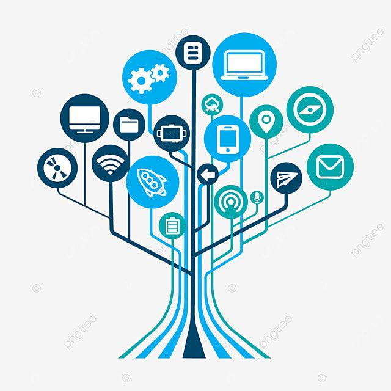
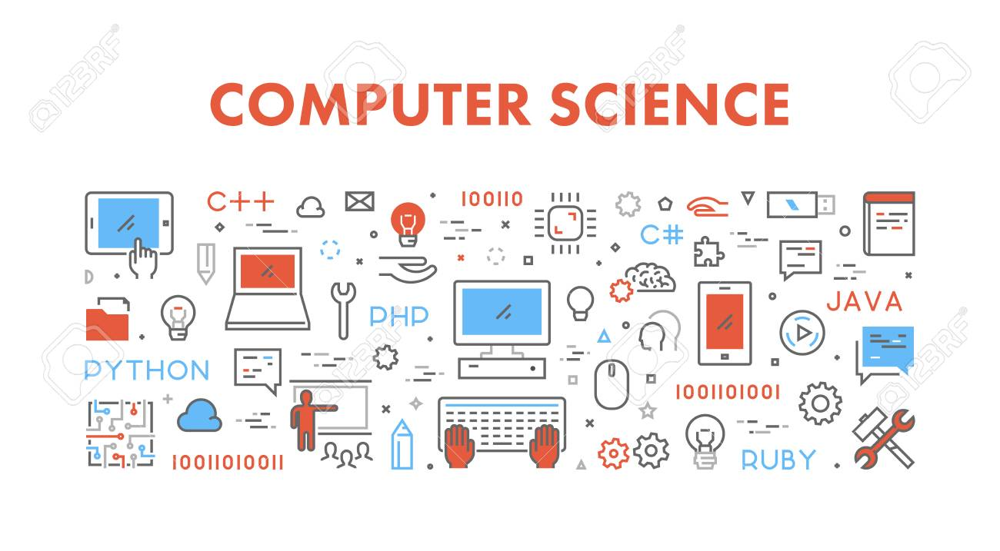

Un lenguaje de programación es un sistema que permite escribir instrucciones para que una computadora pueda realizar determinadas tareas. Existen diferentes lenguajes y cada uno puede utilizarse para distintos objetivos. Algunos ejemplos son Python, Java, JavaScript, C, C++ y C#.
La informática es el área que estudia el procesamiento automático de la información mediante computadoras y otros dispositivos. Su desarrollo fué progresivo y estuvo marcado por diferen- tes inventos y avances tecnológicos. Uno de los primeros instrumentos utilizados para realizar cálculos fue el ábaco.
Arduino es una plataforma electrónica que permite crear proyectos mediante la combinación de programación y componentes electrónicos. Sus placas cuentan con un microcontrolador que ejecuta las instrucxiones programadas. Algunos de sus componentes principal es el microcontro- lador, los pines digitales y analógicos y el puerto USB.
La robótica es una disciplina que combina conocimientos de programación, electrónica, informática y mecánica para diseñar y construir robots. Estos pueden estar programados para realizar diferentes tareas. Algunos pueden moverse, detectar objetos, seguir instrucciones o responder a información obtenida mediante sensores.
La electrónicaes una rama de la tecnología que trabaja con circuitos y componentes capaces de controlar el paso de la corriente eléctrica. Se encuentra presente en computadoras, celulares, electrodomésticos, vehículos y muchos otros dispositivos.
Un sistema operativo es el software principal de un dispositivo. Se encarga de administrar los recursos del equipo y permite que el usuario pueda utilizar diferentes programas. Tambien controlar elementos como la memoria, los archivos, los dispositivos conectados y los procesos que se están ejecutando.
Trabajo realizado por Martina Seri de 4B